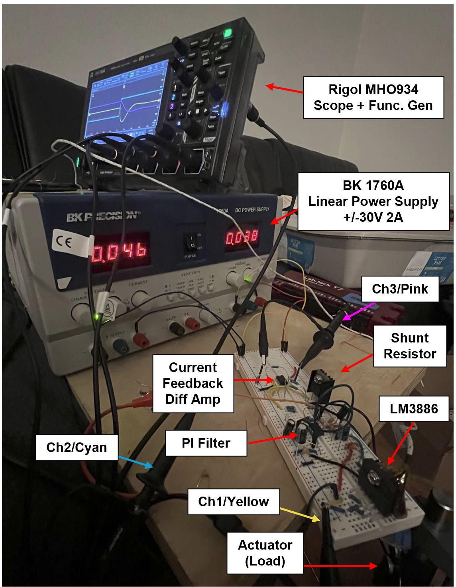
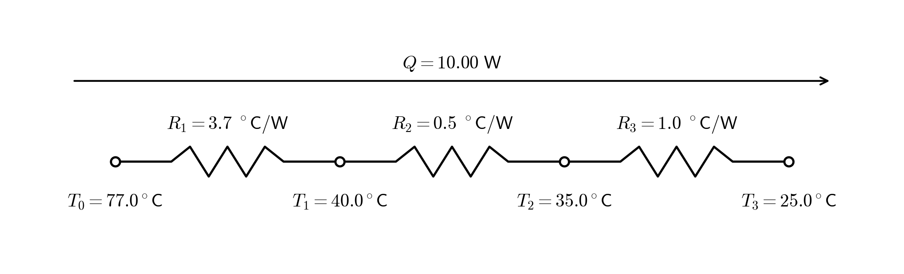

LM38866 Linear Amplifier Pt 1: Breadboard
Updated 06-06-2026
A linear amplifier for driving resistive and inductive loads is designed and tested. Tests are performed using a function gen, scope, etc... This amplifier is useful for driving voice coils, reluctance actuators, shakers, etc... at high bandwidth and high power at order-of-magnitude lower cost than COTS options.
I chose to design/build this for 4 reasons
- COTS amplifiers (Trust, Varedan) are expensive, even used they can be >$100 each on ebay
- Gain hands-on experience with practical aspects of analog circuit design
- Use experience gained with this circuit to design analog closed loop flux amplifier for driving reluctance actuators
- Extend this design to drive 3 (or more than 3) phase motors
The next step is to put this design on PCB and heatsink, which I expect to cost ~$40
Breadboard/Setup Photo

Quick Breadboard Performance Measurements
For all waveforms shown, channel 1 (yellow) = LM3886 output voltage, channel 2 (cyan) = function gen output, channel 3 (pink) = sense current output from amplifier
The small-signal response to step input is shown below. Time scale is 20us/div so the response is fast, well damped, with a small overshoot. The rise time is ~20us which implies bandwidth 0.35/20e-6 = ~18kHz

A small-signal close loop bode from input voltage to sense current is captured by sine sweep (scope has built-in-feature). The DC gain is -3.8dB or ~0.65A/V. The phase starts at 180deg because the input inverts. The -3dB point is ~25kHz. The phase lag at 1kHz is -3.8deg. There is ~0.6dB of peaking in the close loop which typically means healthy phase margin---aligns well with the step input results.
The raw data for the plot is located here CSV

Load/Plant Reluctance Acutator (E-Core Motor)
A hand-made reluctance acuator is used as the "plant" to be driven. Its DC resistance is ~0.55ohm at 20C which is poorly matched to this chip, I will need to re-wind with smaller magnet wire.
Power amplifier chip
LM3886 is selected as it has a very high power capability to cost ratio. The chip datasheet indicates power of 135W Pk/68W Cont. provided the load is well matched. The cost is ~$7 in 2026.
Current Feedback
A 0.1 ohm shunt and gain-of-10 differential amplifier yield a 1A/V feedback. At 10A (10W), TCR could impact accuracy. To mitigate this risk, a $5, 3.7degC/W TO220 resistor was chosen; a 1.5degC/W TO247 alternative tripled the cost.
With 0.5degC/W paste and a 1degC/W heatsink, peak temperature is 77degC (25degC ambient). This 52degC rise causes a maximum 0.5% shift (100ppm/C). Real error may be lower as continuous 10A operation is unlikely. (This simple analysis doesn't consider the obvious nonlinearity in I2R when R is function of T)

Below is bode data from one setup of the current shunt differential amplifier. Four 5% resistors set gain to 100 across 1% 0.1ohm shunt so expected gain is ~20dB and measurement is ~20.61dB which seems appropriate. The -3dB point is 115.7kHz (instead of expected 80kHz per 8MHz GBW). Either way the frequency is high enough to have effectively no impact as the phase loss at 10kHz is -0.5deg. In final design I set the gain down to 10 with 0.1% resistors which extends bandwidth further and allows current measurement up to thermal limit of the shunt. Above 10MHz it seems parasitics or non-ideal behaviors start to impact the circuit.

Controller
An analog PI filter is used. Analog gives order-of-magnitude better performance than a typical digital current controller using ADC/DAC and DSP chip. Downside is control parameters cannot be updated easily with a software update and that implementing more complex controller algorithms is non-trivial. Control parameters must be set with resistors and capacitors